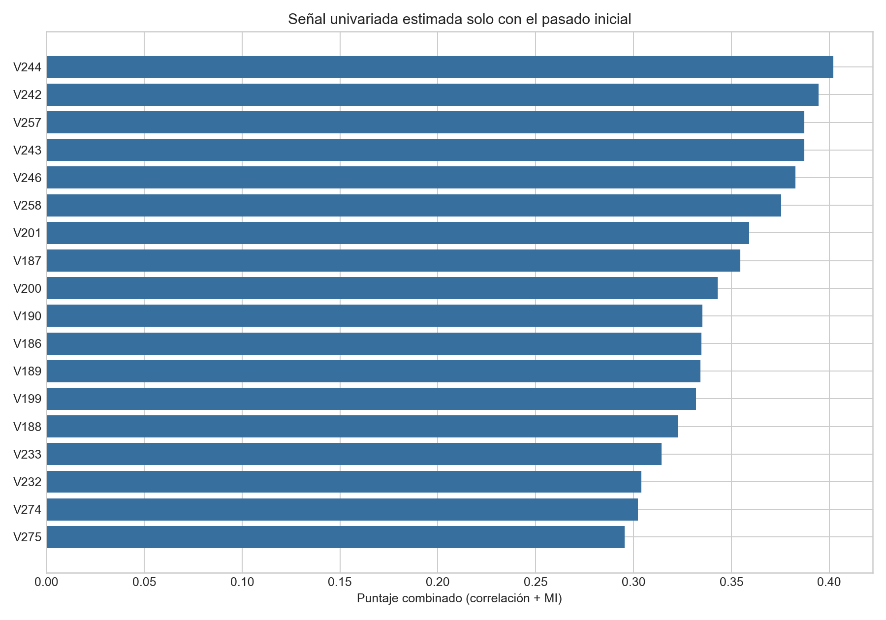
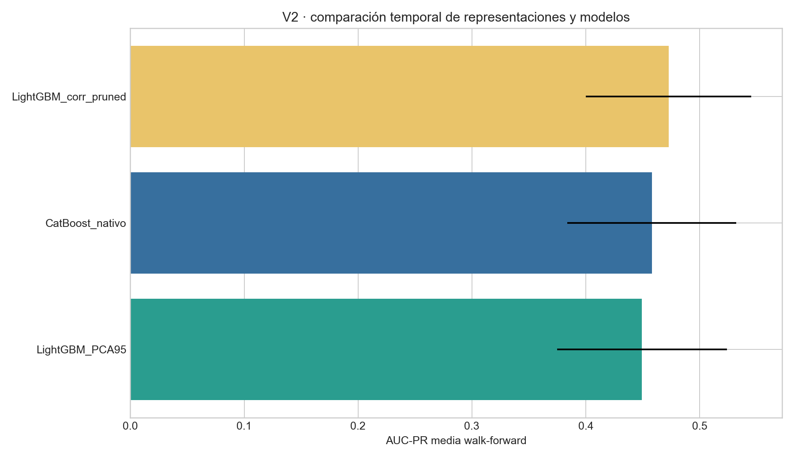
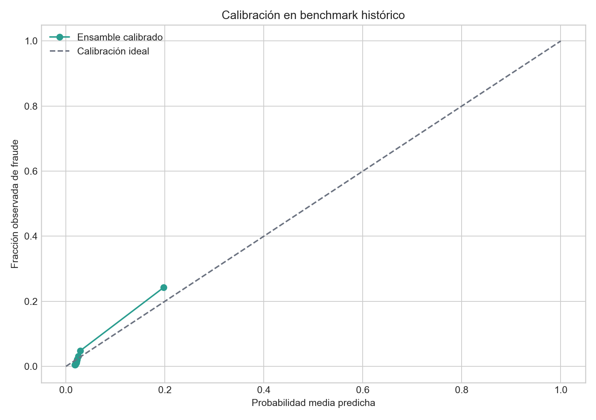

0.454
AUC-PR LightGBM V2
Primero datos y protocolo; V1 mostró señal de orden débil.
AUC-PR LightGBM V2
Integradas y auditadas.
Train, validación, benchmark.
xᵗʰⁱˢᵗ=f({xⱼ:tⱼ<t})
variables numéricas retenidas


Recall 70.29%
Q6,078,120
Recall 70.19%
Q6,228,600

Precision@K y Recall@K conectan riesgo y capacidad.